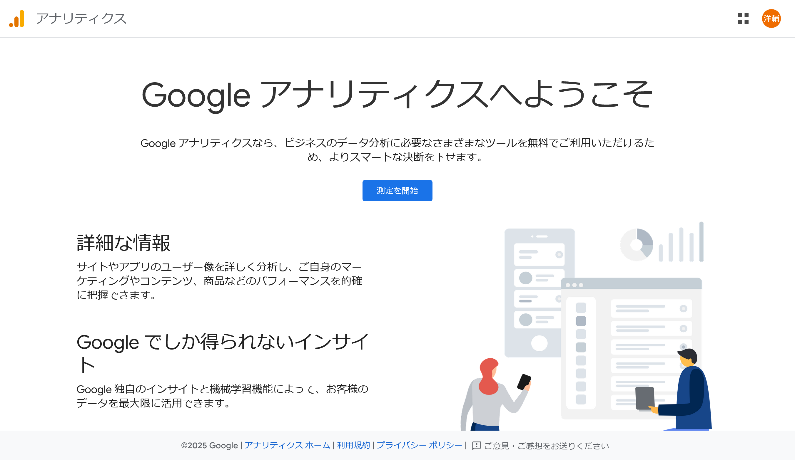
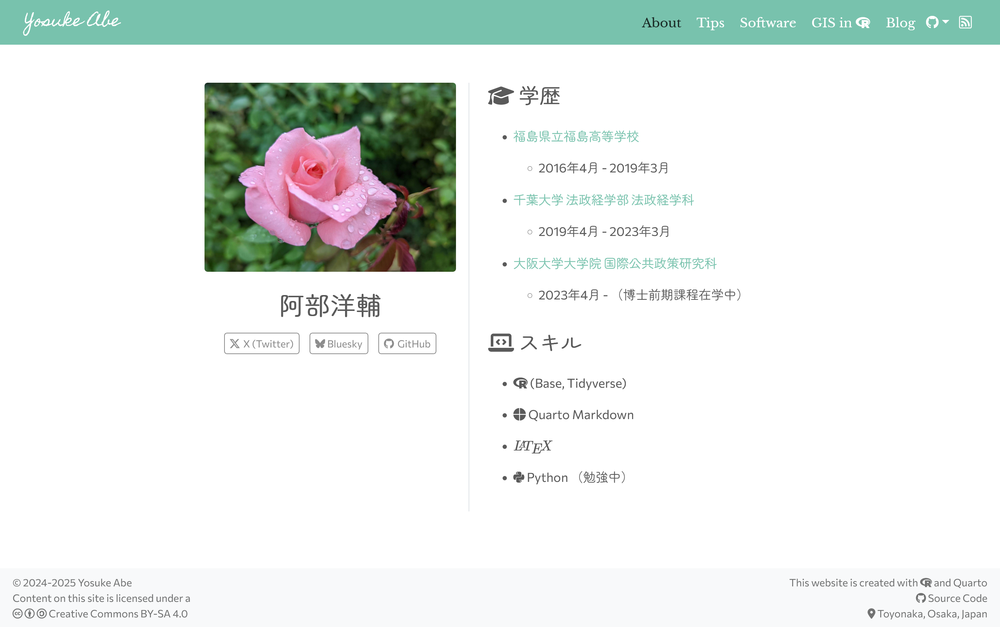

はじめに
2月に入りましたが、本年初の更新となります。今年は就職の年ですが、時間があるときに学びを備忘録がてら更新していきたいと思いますのでよろしくお願いします。
今回は以前ご紹介したウェブサイトの作り方について、さらに設定を追加していこうと思います。
追加する設定は、
Googleアナリティクス
SNSアカウント
フッター
です。前提として、以下のページ等をもとにQuartoのウェブページが作成されているとします。
順を追ってみていきましょう。
Googleアナリティクス
そもそもですが、Googleアナリティクスでは、ウェブサイトやアプリの訪問者の動向を分析することができます。例えば、昨日は何人がページを訪れて、どのページを見ていったか、といったことが把握できるようになります。
アナリティクスページ
まずは、Googleアナリティクスのページでの設定を行います。

- https://analytics.google.com/へ移動し、使用するGoogleアカウントでログインする
- 「測定を開始」をクリック
- 任意のアカウント名を入力、データ共有設定で必要な項目にチェックを入れ、次へ
- アカウント名は何でも大丈夫です。
- チェックはそのままでも大丈夫です。
- 任意のプロパティ名を入力し、次へ
- これはウェブページ名にした方がわかりやすいと思います。
- 例：「hogehoge.github.io」
- ビジネスの説明を入力し、次へ
- ここは適当で大丈夫だと思います。
- ビジネス目標を選択し、「作成」を選択
- 「ウェブ/アプリのトラフィックの分析」や「ユーザーエンゲージメントとユーザーの維持率の把握」あたりが該当すると思います。
- 「ウェブ」を選択
- URLとストリーム名を入力し、「作成して続行」をクリック
- URLはGitHubページであれば「(ユーザー名).github.io」です。不安であればホームページからコピーしてきてください。
- ストリーム名はプロパティ名と同じでいいと思います。
「Googleタグの設定」という画面が出てくると思いますが、ここは×で閉じて大丈夫です。すると、「ウェブ ストリームの詳細」の画面が出てくるので、そこの測定 ID（Gで始まる）をコピーして下さい。
画面を閉じてしまっても、表示されている画面で該当するページ部分をクリックすれば再度開くことができます。
Quartoの設定
エディターに戻り、_quarto.ymlを開きます。
以下のように、google-analyticsにコピーしたIDを追記してください。
project:
type: website
website:
title: "ホームページ"
google-analytics: "G-xxxxxxxxxx"
navbar:
right:
- about.qmdこれで保存して再度パブリッシュ1し、しばらくすると追跡結果がみられるようになります。すぐは見れませんが、しばらくした後再度Googleアナリティクスを訪れてみてください。
SNSアカウントを追加
ウェブサイトからXやFacebookなど他のページへ飛んでほしいこともあるかと思います。こうしたSNSアカウントやGitHubなどのアイコンの表示方法をご紹介します。
ナビゲーションバー
まずは画面上部のナビゲーションバーに表示する方法です（本ページも右上にGitHubアイコンがあります）。
_quarto.ymlを開きます。以下のようにtoolsを追記して下さい。
project:
type: website
website:
title: "ホームページ"
google-analytics: "G-xxxxxxxxxx"
navbar:
right:
- about.qmd
tools:
- icon: twitter-x
href: https://twitter.com/hogehoge
text: Twitter
- icon: github
href: https://github.com/hogehoge
text: GitHubicon、href、textの3つがあります。Xはtwitter-xとなっていることに注意してください。Twitterアイコンがよければシンプルにtwitterで表示できます。
これで保存しページをレンダリングすると、アイコンが表示されていると思います。
ページ内で表示
僕のAboutページにあるように、プロフィールとセットで表示したい場合は、次のように設定します。
表示したいページの.qmdファイルで、YAMLヘッダーを以下のように変更します。
---
title: Hogehoge
about:
template: trestles
links:
- icon: twitter-x
text: X (Twitter)
url: https://x.com/5uke_y
- text: " Bluesky"
url: https://bsky.app/profile/5uke.bsky.social
- icon: github
text: GitHub
url: https://github.com/hogehoge
---aboutのtemplateはtrestles以外にもいろいろあります。こちらを参照して下さい。
肝心なのはlinksです。書き方はナビゲーションバーと同じです。about下に書くことで、以下のように表示できます。

ちなみにBlueskyの部分の書き方が少々ややこしいですが、これはまだBlueskyのアイコンが提供されていないため、Iconifyのアイコンを使って代用しています。アイコンの挿入についてはこちらを参照してください。
以上がSNSアイコンの説明になります。概ねこの2か所に表示することが多いかと思いますので、ご参考になれば幸いです。
フッターの設定
大体のウェブページにはフッターが付いていますよね。「©2025 Hogehoge」みたいなものです。
これもナビゲーションバーと同様に左、真ん中、右でそれぞれ設定できます。
再び_quarto.ymlを開いて、以下のように設定します。
project:
type: website
website:
title: "ホームページ"
navbar:
right:
- about.qmd
page-footer:
background: light
center: |
© 2025 Hogehogebackgroundはフッター部分の背景に少し色が付きます。もちろんdarkもあります。
center部分はleftとrightもあります。また、|で改行することで次の行に書くことができます。center: "© 2025 Hogehoge"みたいに1行で書くこともできるのですが、ダブルクォーテーションを忘れないで下さい。
©はHTMLエンティティといって、これを出力すると「©」となります。別に直接「©」を入れても大丈夫です。
ちなみにフッター内で改行したい場合は、HTMLと同じで<br>を入れれば可能です。© 2025 Hogehoge <br> This website is created with Quartoのように書けます。
おわりに
今回はGoogleアナリティクス、SNSアカウント、フッターについての設定をご紹介しました。
これらはQuarto公式ガイドを読んだり、人の_quarto.ymlを真似するのがおすすめです。
最後に僕がこれまで参考にした方々のコードと、僭越ながら自分のコードのリンクも並べておきます。
注
quarto publish gh-pagesなど。詳しくは「【Quarto & RStudio】ウェブサイトを作る！」を参照してください。↩︎